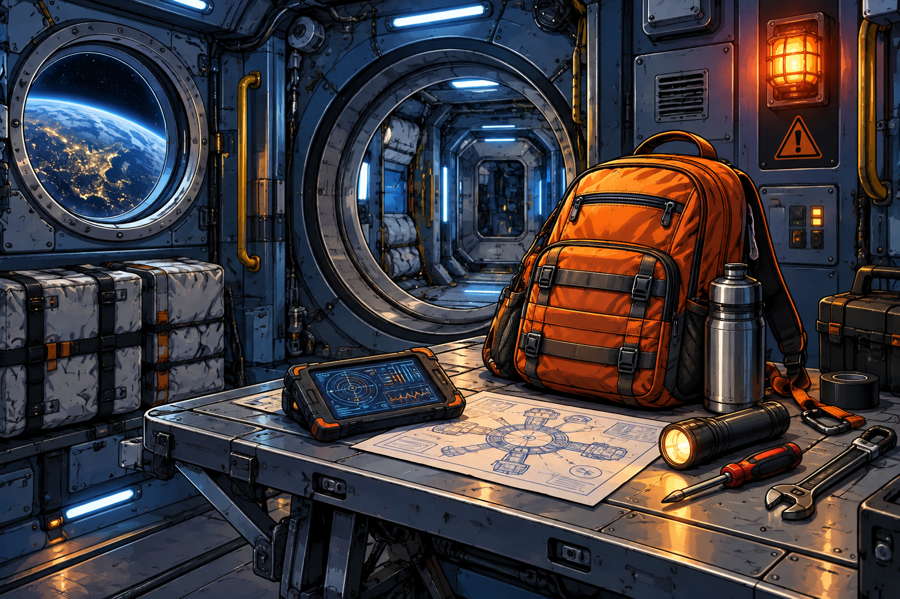
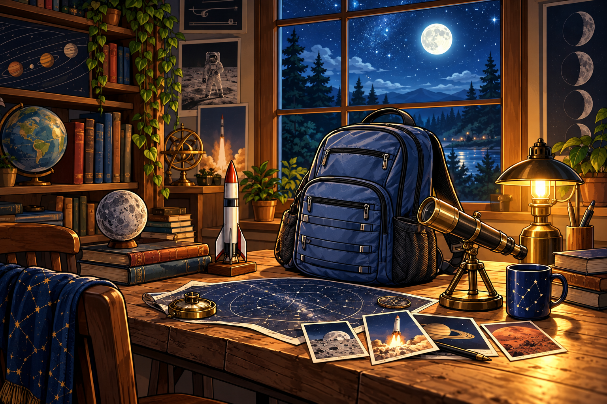

Available now01
The Hiking Backpack
Follow a trail of clues to recover the combinations and find Juno’s favourite plushy.
Explore this adventurePuzzle adventures to take home
Open the bag, follow the clues, and solve your way through a story you can hold. Start with the Hiking Backpack, or see what’s coming next.
Already playing? Hiking hintsReset checklist
Made in Ottawa · Play at your own pace
Already playing?
Everything you need during and after the Hiking Backpack game is one tap away.
Choose a world
Each backpack has its own setting and puzzles. The Hiking Backpack is ready to play; the others are taking shape.
Follow a trail of clues to recover the combinations and find Juno’s favourite plushy.
Explore this adventure
Follow Aunt Liv’s postcards across the Norse world toward a family secret. Try Leif’s opening chapter online.
Play Leif’s trail Solo · desktop recommended · physical game in development
The crew is stranded in their quarters. Explore the station and help bring its systems back online.
Station adventure · coming later
Explore the history of space discovery and uncover your uncle’s playful secret project.
Working title · in conceptThe experience
Everything begins with a backpack full of physical clues and a story to unravel together.
Request the Hiking Backpack. Pickup and return are arranged in person in Ottawa.
Unpack the story, solve the puzzles, and use the hint companion if you need a nudge.
Use the reset checklist to put everything back in place for the next players.
Good to know
Clear answers for planning, playing, and passing the backpack on.
The Hiking Backpack is the one currently available. The Norse and Aurora adventures are in development; Space Exploration is an early concept.
Use the request form to choose a preferred week. Pickup and return are arranged in person in Ottawa; the details are confirmed after your request.
The Hiking Backpack is designed for 1–4 players, ages 8 and up. Most teams finish in about 1–2 hours.
Open the Hiking hint companion while you play. It lets you ask for help on the puzzle you’re working on.
Follow the illustrated reset checklist so every prop is ready for the next group.
Take the next step
Start with the Hiking Backpack. Already played? Tell us what worked and what could be better.